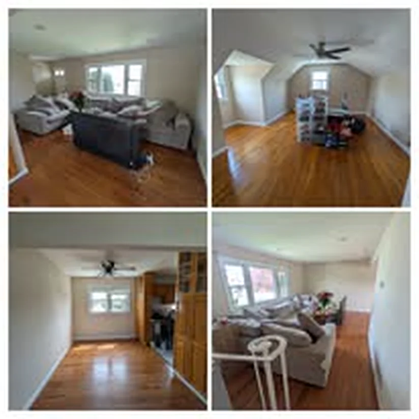
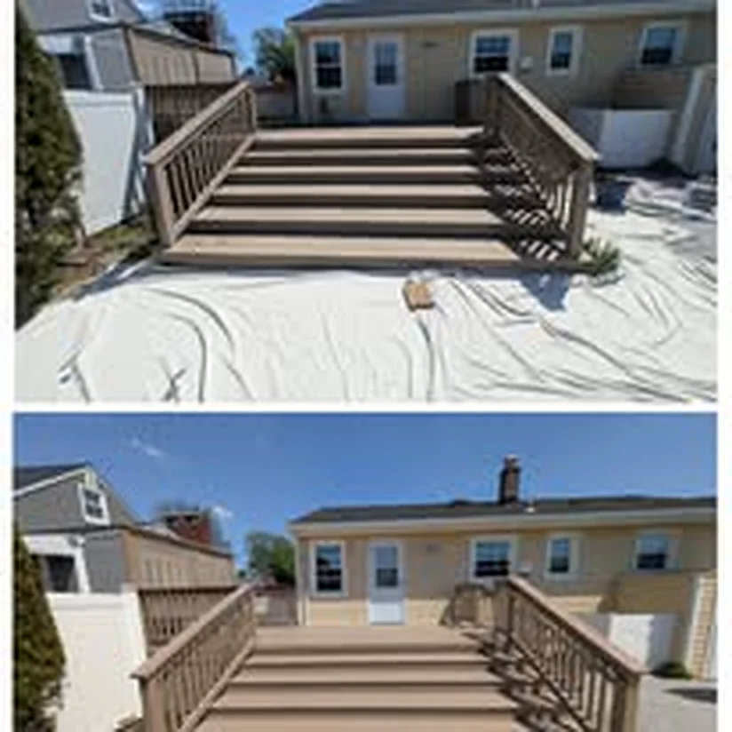
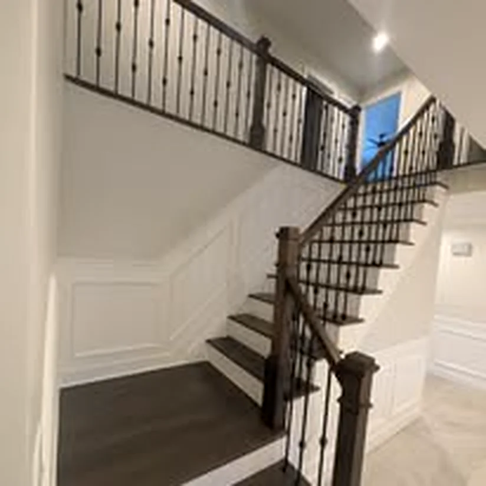
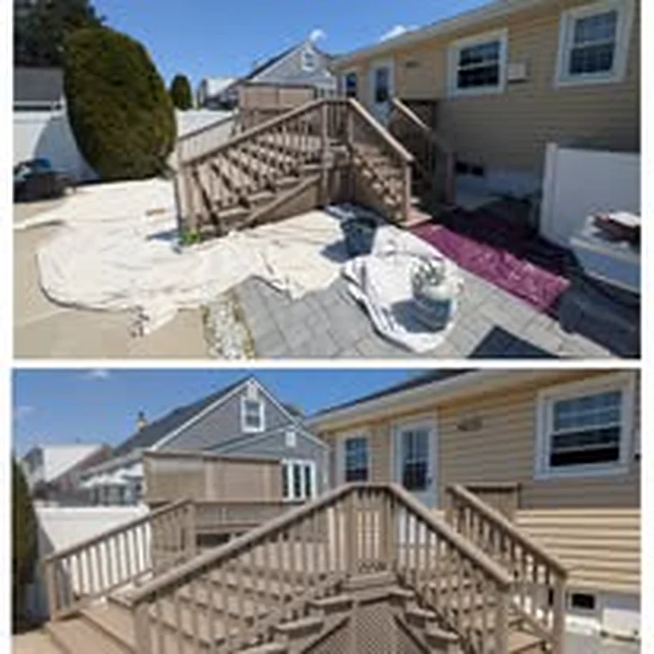
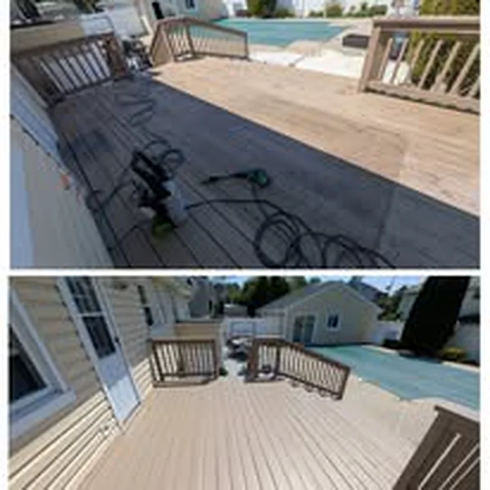

Project Photos
Painting Project Gallery in Carteret and Central New Jersey
This page keeps the project photos in one place so homeowners can scan interior work, exterior jobs, prep-heavy projects, and finished details without digging through the rest of the site.
Interior, Exterior, Prep, and Finish Detail
Project photos from around the Carteret service area
These photos back up the service pages and give local homeowners another quick proof point before they reach out.









FAQ
Frequently asked questions for homeowners near Carteret, NJ
The FAQ stays near the bottom of every page instead of sitting in the main navigation.
Do you offer free estimates in Carteret and nearby towns?
Yes. Sal's Painting offers free estimates for interior painting, exterior painting, drywall repair, trim work, deck staining, and basic renovation help across Carteret and nearby Middlesex County towns.
What towns does Sal's Painting usually serve?
Carteret is the core base, with regular coverage that includes Perth Amboy, Woodbridge, Rahway, Linden, Iselin, Edison, Sayreville, South Amboy, and nearby Middlesex County neighborhoods.
Can drywall repair and prep be handled before painting?
Yes. Patch work, sanding, priming, and surface prep are part of the service when the wall or ceiling needs more than a quick repaint.
Do you handle trim, doors, ceilings, decks, and fences too?
Yes. Sal also handles trim, doors, ceilings, accent walls, deck staining, fence painting, and the detail work that rounds out a painting project.
Are evenings and weekends available?
Yes. Sal's Painting is available 7 days a week from 7AM to 9PM. The fastest next step is to call or text (727) 644-7674.
How do I send project details for an estimate?
Use the contact page to send the project scope, town, timing, and notes. If you want a faster response, call or text first and follow up with the details after that.